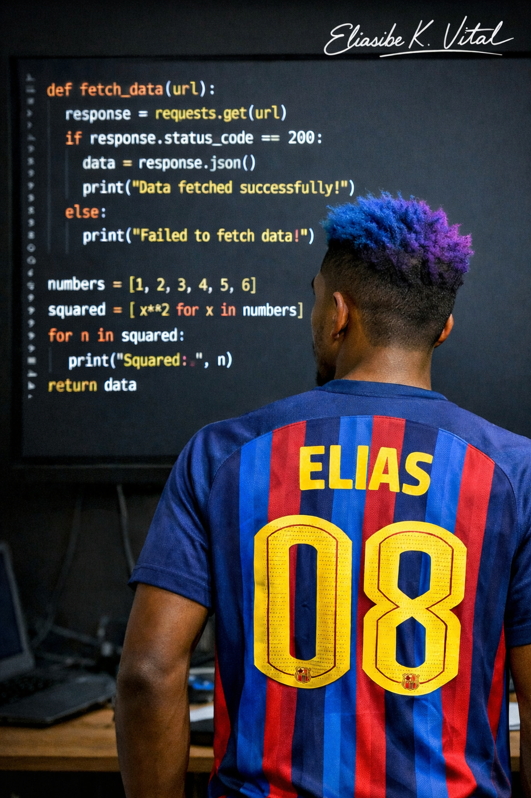

Oi, meu nome é Eliasibe Konde Kiassungua Vital, mais conhecido como Eliasibe Vital. Estudante do ensino médio, mais precisamente do terceiro ano. Aspirante a Programador, e apaixonado por Engenharia de dados, Cloud e IA. Sou Angolano, nascido no Bairro Cazenga, em 12/04/2008 na província de Luanda. Aluno do IPIL/Makarenko, amante de tecnologia e almejando um futuro melhor

OLÁ, SEJA BEM-VINDO AO MEU PORTFÓLIO
Olá, sou o Eliasibe Vital
Estudante de informática e programador em formação
Aqui apresento a minha trajectória, competências e projectos desenvolvidos.
Ver os meus projectosSobre Mim
Os meus projectos
Gestor De Vendas em Python.
Um programa adaptado aos preços e a realidade das lojas nas comunidades angolanas. Criado principalmente pela necessidade de utilização de um software de vendas simples e usual para qualquer pessoa capacitada.
PythonUma Tela De Login.
Uma tela interativa para a página inicial do site de um Clube de Natação. Mais do que uma porta de início de sessão, é uma parede segura de acesso a uma página determinada que exige permissão e as devidas informações.
HTML | CSS | JSA Base de Dados de um site de competições.
Uma base de dados para registar competições, atletas, medalhas, resultados, e muitas outras informações relacionadas ao site.
SQL & MySQLContactos
Entra em contacto comigo para conhecer melhor o meu trabalho
933152318
951464838